# 라운드 7 — 2026-10-23 02:16 평균 점수(C, 1~5, Claude 채점): **3.17** · 자동 점수 2.95 · 그림 면적 평균 34% · 비용 $1.318 · 얼굴 잘림 0 | 유형 | 평균 | A 나음 | C 나음 | 같음 | |---|---|---|---|---| | 사진 | 3.13 | 0 | 5 | 0 | | 누끼 | 3.20 | 0 | 4 | 1 | | 오브젝트·일러스트 | 3.20 | 0 | 5 | 0 | AI 상자 결과: rule 40 · free 14 · shrink 43 · grow 14 · ok 9 ## 문제 집계 - bg:flat 46 - kvWeight:too_small 45 - crop:subject_cut 34 - text:low_contrast 16 - crop:awkward 12 - kvWeight:too_big 5 - text:overlap 5 - bg:seam 2 - crop:face_cut 2 - bg:busy 1 ## 케이스별 큰 문제 - **t1014-hanssem**(사진) · C 나음: 가로 와이드(1200×600)에서 사진 영역을 우측 끝에 좁게 고정해 인물이 빠지고 모니터 조각만 남음 — 사진 폭 비율을 규격과 무관하게 고정한 규칙이 원인으로 추정 / 1250×560·580×400·세로형에서 사진을 비네트 처리한 작은 블록으로 축소해 단색 갈색 지면이 넓게 비어 보임 — 사진 스케일을 텍스트 영역 우선으로 줄인 탓 / 300×1050·300×600 세로형 텍스트가 지나치게 작아 판독 불가 — 가로형 텍스트 블록을 그대로 축소 적용한 것으로 추정 - **hr-doctor**(사진) · C 나음: 세로형·와이드 규격(970×250, 580×400, 300×1050, 1080×1080)에서 손이 작아지고 하단에서 잘림 — 키비주얼을 하단 앵커로 고정한 채 규격 비율과 무관하게 축소한 배치 로직 탓으로 추정 / 연보라 틴트 오버레이가 사진 전체를 덮어 지면이 단조롭고 비어 보임 — 가장자리 그라데이션 색을 배경 전면 채움에도 그대로 써서 사진의 깊이감이 죽은 것으로 추정 / 1080×1080 좌하단에 원본 배경 잡물이 노출되고 300×1050 본문은 너무 작아 판독 불가 — 정사각·극세로 규격에서 그라데이션 마스킹 범위와 최소 폰트 크기 규칙이 부족한 것으로 추정 - **midas-team-photo**(사진) · C 나음: 970×250·580×400·1080×1080에서 사진이 우하단 구석의 작은 띠로만 배치되어 인물 얼굴이 하단에서 잘림 — 세로형 단체 사진을 지면 하단 앵커로 맞추고 얼굴 위치를 고려한 스케일·크롭을 하지 않은 것으로 추정 / 같은 규격들에서 단색 슬레이트 면이 넓게 남아 지면이 비어 보임 — 사진 확대 대신 배경 채움으로 비율을 해결한 결과 / 300×1050·320×100의 글자·로고가 판독 불가 수준으로 작음 — 레이아웃 비율을 그대로 축소하고 최소 글자 크기 규칙이 없는 것으로 추정 - **t1014-asan-photo**(사진) · C 나음: 가로형·정사각 규격에서 사진이 오른쪽 아래 구석으로 밀려 단색 남색 면이 지면 대부분을 차지함 — 주인공 없는 풍경 사진을 장식 요소로 보고 최소 크기로 배치한 탓으로 추정 / 1200×600 등 일부 규격에서 병원 건물이 빠지고 아파트·불빛 조각만 남음 — 크롭 기준을 밝은 영역(불빛)에 맞춘 탓으로 추정 / 1080×1080·300×1050에서 본문 글자가 지면 대비 너무 작음 — 텍스트 스케일을 짧은 변 기준으로 고정한 규칙 탓으로 추정 - **midas-cablebridge**(사진) · C 나음: 작은 규격과 세로형(300×600, 300×1050, 1080×1080)에서 텍스트가 너무 작고, 진회색 글자가 중간 톤 회청색 배경에 묻혀 안 읽힘. 원인 추정: 배경을 사진 바다색에 맞춰 톤을 낮췄지만 텍스트 색은 대비 검증 없이 고정한 것. / 가로형 1개(970×250)를 빼면 키비주얼이 오른쪽 아래 구석으로 밀려 작게 잘리고 지면 대부분이 단색으로 비어 보임. 원인 추정: 주인공(41%) 기준 크롭 대신 원본 비율을 유지한 채 축소하고 구석에 앵커링한 것. / 주탑 2개와 응력 컬러 케이블이라는 핵심 피사체가 대부분의 규격에서 잘려, 한 탑의 조각만 남음. 원인 추정: 덩어리가 여럿인 가로형 피사체를 하나의 바운딩 박스로 처리해 세로·정사각 지면에서 우선순위 크롭(주탑 1개)을 하지 않은 것. - **t1014-dongsuh**(누끼) · C 나음: 1080×1080에서 인물이 하단에 작게 배치되어 노란 면이 단조롭게 비어 보임 — 정사각 규격에서 텍스트 블록에 높이를 먼저 할당하고 인물은 남은 영역에 맞춰 축소한 규칙 탓으로 추정 / 300×1050에서 직무 안내 본문까지 유지해 글자가 판독 불가 수준으로 작아짐 — 좁은 폭 규격에서 정보 위계(본문 생략)를 판단하지 않고 모든 텍스트 요소를 그대로 축소 배치한 것으로 추정 / 전 규격에서 로고가 지나치게 작고 위치가 규격마다 달라 브랜드 노출이 약함(1250×560은 좌하단으로 따로 떨어짐) — 로고 최소 크기 규칙과 정렬 기준이 없는 것으로 추정 - **t1014-jeil**(누끼) · C 나음: 세로로 극단적인 규격(300×1050, 300×600)에서 키비주얼을 폭보다 크게 키워 주인공이 잘리거나 조각만 남음: 확대 비율을 높이 기준으로 잡고 폭 제한을 두지 않은 것으로 추정됨 / 가로로 낮은 배너(970×250, 320×100)에서 키비주얼이 위아래로 넘쳐 배지와 하단 인물이 잘림: 비중을 키우려다 안전 영역 검사를 빠뜨린 것으로 추정됨 / 580×400은 A와 같이 작은 구석 배치에 머물러 지면이 비어 보임: AI 판단이 이 규격에는 적용되지 않은 것으로 보임 - **t1014-bionote-dog**(누끼) · C 나음: 세로 극단 규격(300×1050)에서 키비주얼이 작은 고정 스케일로 바닥에 붙어 중간이 비어 보임. 극단 비율에 대한 확대 규칙이 없는 것으로 추정됨 / 1250×560·300×600에서 개를 키우면서 텍스트 안전 영역과의 충돌 검사가 빠져 헤드라인과 날짜가 개 머리에 닿음 / 580×400에서 개가 우측 가장자리에 작게 걸려 몸이 잘림. 확대 판단이 이 규격에만 적용되지 않은 것으로 보임 - **abl-group**(누끼) · C 나음: 가로형 규격(1200×600, 1250×560, 580×400)에서 캐릭터를 키우면서 텍스트 하단과의 안전 여백 계산이 빠져 더듬이·머리가 날짜·카피와 겹침 / 세로형(300×600, 300×1050)은 가로로 긴 캐릭터 떼를 비율대로 크롭해 곰·병아리 조각만 남음. 떼를 재배치하거나 대표 캐릭터를 고르는 로직이 없음 / 1080×1080은 키비주얼 스케일을 폭 기준으로 잡아 정사각형에서 캐릭터가 너무 작고 중앙이 비어 보임 - **midas-folder-blue**(누끼) · same 나음: 정사각·세로형(1080×1080, 300×600)에서 C가 아이콘을 키우면서 하단 기준으로 앵커해 폴더 본체가 잘림. 확대율과 위치를 정할 때 '피사체 전체 보존' 제약이 빠진 것으로 추정됨. / 300×1050이 A·C 모두 카피와 아이콘을 원본 비율로만 축소해 글자가 판독 불가하고 지면 중앙이 비어 있음. 극단적 세로비에 맞는 별도 레이아웃 규칙이 없는 것이 원인으로 보임. / 가로형에서는 C가 키비주얼 비중과 배경 그라데이션을 개선했지만, 프레임 가장자리 여백(safe margin) 처리가 일관되지 않아 타일이 모서리에 붙거나 조각나 보임. - **t1014-gs2025**(오브젝트·일러스트) · C 나음: 세로형(300×600, 300×1050)과 초소형(320×100)에서 크롭이 가장 큰 오브젝트인 메가폰에 맞춰져 인물이 잘리거나 빠짐. 크롭 앵커가 인물 그룹이 아닌 면적 기준으로 잡힌 것으로 추정됩니다. / 가로형(1200×600, 580×400)에서 키비주얼이 우하단에 작게 들어가 지면 우상단이 비어 보임. 배경형이라 바탕 확장에 기대고 오브젝트를 키우지 않은 것으로 추정됩니다. / 300×1050은 텍스트 스케일이 폭 기준으로만 계산돼 제목이 판독 불가 수준으로 작고 중간이 텅 빔. 세로 길이를 반영한 타이포 스케일 규칙이 없는 것으로 추정됩니다. - **t1014-lt-v2**(오브젝트·일러스트) · C 나음: 1200×600은 키비주얼 비중 조정이 적용되지 않아 A처럼 칩이 작고 지면이 비어 보입니다. 이 규격만 축소 배치 규칙이 그대로 남은 것으로 추정됩니다. / 580×400·1080×1080·300×1050에서 칩이 지면 가장자리에 잘립니다. 확대 후 가장자리 정렬로 크롭해 주인공이 잘린 것으로 추정됩니다. / 300×1050은 텍스트가 지나치게 작고 중간 여백이 큽니다. 세로 초장형 레이아웃에서 텍스트 스케일 규칙이 부족한 것으로 추정됩니다. - **midas-faces-3d**(오브젝트·일러스트) · C 나음: 세로·정사각 규격(1080×1080, 300×600, 300×1050)에서 KV가 하단에 작게 고정되어 중앙이 비어 보임 — 폭 기준 축소 규칙이 C에서도 그대로 적용되어 판단이 반영되지 않은 것으로 추정 / 970×250에서 KV를 높이에 꽉 맞춰 확대해 카드 상단과 폰·손이 잘림 — 높이 대비 피사체 bbox 여백 계산이 빠진 것으로 추정 / 소형 세로 규격의 텍스트가 최소 크기 하한 없이 축소되어 판독이 어려움 - **pin-15**(오브젝트·일러스트) · C 나음: 1080×1080은 A와 마찬가지로 키비주얼이 하단에 작게 잘려 들어가 상단이 텅 빔(세로형 원본을 정사각형 하단 띠에 맞추는 규칙 배치가 그대로 남은 것으로 추정) / 1250×560·580×400에서 보행 신호기가 오른쪽 끝에서 잘림(키비주얼을 우측 정렬로 키우면서 안전 여백을 계산하지 않은 것으로 추정) / 300×1050의 글자가 판독 불가 수준으로 작음(가로폭 기준 텍스트 스케일링에 최소 크기 하한이 없는 것으로 추정) - **t1014-asan-illust**(오브젝트·일러스트) · C 나음: 대부분 규격에서 키비주얼이 너무 작고 하단 구석에 몰려 지면이 비어 보인다. 원본 그룹 전체를 contain 방식으로 축소 배치해서 생긴 것으로 보이며, C도 970×250 말고는 A와 차이가 없다. / 1200×600과 320×100에서 인물 얼굴이 가장자리에 반쪽만 걸린다. 크롭 기준이 인물 얼굴이 아니라 이미지 가장자리에 맞춰진 것으로 추정된다. / 1250×560 등에서 인물을 페이드 마스크로 처리해 경계가 뿌옇다. 텍스트 대비를 확보하려고 넣은 그라디언트가 일러스트 자체를 흐리게 만든 것으로 보인다.
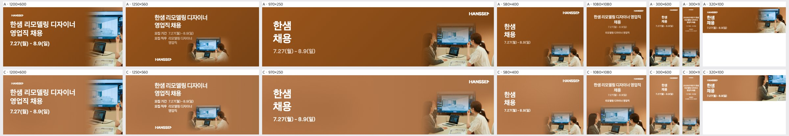
| 규격 | 점수 | 비중 | 크롭 | 배경 | 글자 | 메모 | AI 상자 | 그림 면적·주인공·채움·겹침 |
|---|---|---|---|---|---|---|---|---|
| 1200×600 | 2 | too_small | awkward | ok | ok | 오른쪽 사진 영역이 좁아 모니터 귀퉁이와 노트북만 보이고 두 인물이 빠졌으므로, 사진 영역을 가로 45% 이상으로 넓히고 두 여성이 모두 들어오게 중앙 쪽으로 재크롭할 것. | rule | 15% · 29% · 42% · 0% |
| 1250×560 | 3 | too_small | ok | flat | ok | 사진이 우하단에 작은 비네트로 떠 있어 지면 절반이 빈 갈색이므로, 사진을 높이 꽉 차게 키워 오른쪽 40%에 배치하고 텍스트 블록은 왼쪽으로 옮길 것. | rule | 9% · 15% · 27% · 0% |
| 970×250 | 4 | ok | ok | ok | ok | 인물 두 명과 모니터가 잘 보이나 왼쪽 텍스트와 사진 사이 중앙 여백이 넓으므로, 사진을 약간 왼쪽으로 확장하거나 텍스트 크기를 키워 균형을 맞출 것. | rule | 7% · 23% · 30% · 0% |
| 580×400 | 3 | too_small | ok | flat | ok | 사진이 우하단에 작게 들어가 상단과 왼쪽이 비어 보이므로, 사진을 지면 하단 60% 폭으로 키우고 그라데이션 경계를 더 넓게 풀 것. | rule | 6% · 19% · 25% · 0% |
| 1080×1080 | 4 | ok | ok | ok | ok | 하단 사진 구성은 좋으나 상단 헤드라인과 날짜·직무 글자가 정사각형 대비 작으므로 헤드라인을 1.3배 키우고 행간을 정리할 것. | free | 51% · 35% · 49% · 0% |
| 300×600 | 3 | too_small | ok | flat | ok | 사진이 하단 띠로만 작게 들어가 중간이 비므로, 사진을 하단 50%까지 키워 오른쪽 여성 중심으로 세로 크롭하고 헤드라인을 크게 할 것. | rule | 19% · 38% · 43% · 0% |
| 300×1050 | 2 | too_small | ok | flat | low_contrast | 상단 텍스트가 너무 작아 읽히지 않고 세로 중간이 텅 비었으므로, 헤드라인을 2배 이상 키우고 사진을 하단 40%로 확대해 세로로 배치할 것. | rule | 16% · 31% · 46% · 0% |
| 320×100 | 3 | ok | subject_cut | ok | ok | 오른쪽 사진에서 오른쪽 여성이 잘리고 손 든 왼쪽 여성 일부만 보이므로, 모니터와 한 인물의 얼굴이 온전히 보이도록 크롭 중심을 조정할 것. | shrink | 40% · 20% · 29% · 0% |
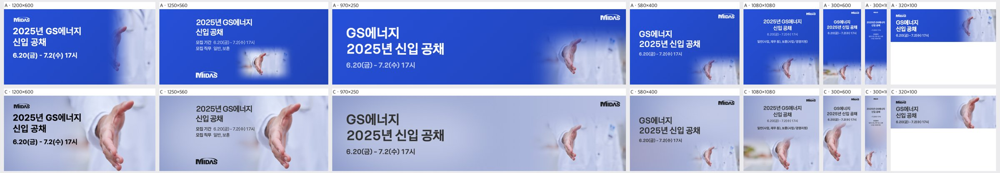
| 규격 | 점수 | 비중 | 크롭 | 배경 | 글자 | 메모 | AI 상자 | 그림 면적·주인공·채움·겹침 |
|---|---|---|---|---|---|---|---|---|
| 1200×600 | 4 | ok | ok | ok | ok | 손이 화면 높이를 거의 꽉 채우고 손끝이 하단에 닿아 답답하니, 이미지를 10%가량 축소하고 위로 올려 손 아래에 여백을 확보할 것. | grow | 70% · 36% · 53% · 0% |
| 1250×560 | 3 | ok | subject_cut | flat | ok | 손이 우측·하단 모서리에 걸려 잘리고 좌측 절반은 연보라 평면으로 비어 보이니, 손을 프레임 안쪽으로 15%가량 당겨 엄지와 손끝이 모두 보이게 하고 텍스트 블록을 좌측으로 붙여 균형을 맞출 것. | shrink | 58% · 30% · 42% · 0% |
| 970×250 | 3 | too_small | subject_cut | flat | ok | 손이 우측 하단에 작게 걸치고 손끝이 잘려 중앙~우측이 빈 연보라 면으로 남으니, 손을 1.5배 키워 세로 중앙에 두고 오른쪽 1/3 영역을 채울 것. | rule | 7% · 21% · 37% · 0% |
| 580×400 | 3 | too_small | subject_cut | flat | ok | 손이 우하단 구석에서 하단에 잘려 존재감이 약하니, 손을 키워 우측 중앙으로 올리고 손끝까지 프레임 안에 넣을 것. | rule | 5% · 16% · 32% · 0% |
| 1080×1080 | 3 | too_small | subject_cut | busy | ok | 좌하단에 원본 배경의 주황·초록 흐림 오브젝트가 드러나 어수선하고 손은 하단에 잘리니, 손을 키워 하단 중앙에 온전히 배치하고 좌하단은 그라데이션으로 덮을 것. | shrink | 48% · 20% · 40% · 0% |
| 300×600 | 4 | ok | ok | ok | ok | 손이 하단을 잘 채우지만 손끝이 바닥에 닿으니, 이미지를 약간 위로 올려 손끝 아래에 숨 쉴 여백을 줄 것. | grow | 72% · 48% · 61% · 0% |
| 300×1050 | 2 | too_small | subject_cut | flat | low_contrast | 본문 텍스트가 너무 작은 회색이라 읽히지 않고 중간이 텅 비었으니, 헤드라인과 일정을 2배 이상 키워 상단 1/3을 채우고 손을 확대해 하단 1/2을 차지하게 할 것. | rule | 17% · 35% · 51% · 0% |
| 320×100 | 4 | ok | ok | ok | ok | 손이 우측 상단으로 치우쳐 손바닥 일부만 보이니, 손을 세로 중앙으로 내려 손 형태가 한눈에 읽히게 할 것. | grow | 43% · 30% · 46% · 0% |
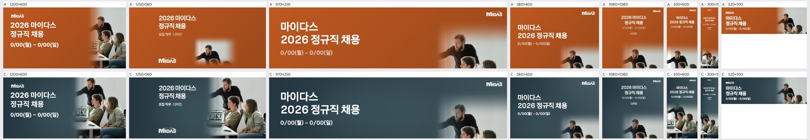
| 규격 | 점수 | 비중 | 크롭 | 배경 | 글자 | 메모 | AI 상자 | 그림 면적·주인공·채움·겹침 |
|---|---|---|---|---|---|---|---|---|
| 1200×600 | 4 | ok | ok | ok | ok | 세 인물과 노트북이 모두 살아 있고 글자와도 분리되어 있다. 다만 수염 남성의 정수리가 상단에 거의 붙으므로 사진을 5~8% 아래로 내려 머리 위 여백을 확보할 것. | shrink | 47% · 24% · 39% · 0% |
| 1250×560 | 4 | ok | ok | ok | ok | A의 떠 있는 사각 패치와 경계가 사라져 크게 개선됐다. 수염 남성의 뻗은 팔이 그라데이션 페이드에 묻혀 흐려지므로 페이드 시작점을 왼쪽으로 40px 정도 옮겨 팔 끝을 살릴 것. | shrink | 47% · 26% · 35% · 0% |
| 970×250 | 3 | too_small | subject_cut | flat | ok | 사진이 오른쪽 하단 띠로만 들어가 수염 남성 상반신만 보이고 나머지 두 사람은 정수리만 남았다. 사진을 높이 기준으로 확대해 오른쪽 40% 폭에 세 사람 얼굴이 모두 들어가도록 세로 중심을 얼굴 라인에 맞추고, 가운데 빈 단색 면을 줄일 것. | rule | 6% · 26% · 41% · 0% |
| 580×400 | 3 | too_small | subject_cut | flat | ok | 사진이 우하단 구석에 작게 박혀 아래 두 인물의 얼굴이 하단에서 잘린다. 사진을 우측 절반 높이 전체로 키우고 앵커를 얼굴 영역(상단 60%)에 둘 것. | rule | 4% · 21% · 36% · 0% |
| 1080×1080 | 3 | too_small | subject_cut | flat | ok | 정사각형인데 사진이 하단 1/3에만 있어 상단 단색 면이 넓게 비고, 인물들이 하단에서 잘린다. 세로형 원본을 화면 높이의 65% 이상으로 키워 하단 중앙에 배치하고 글자 블록과의 페이드를 길게 줄 것. | rule | 7% · 34% · 45% · 0% |
| 300×600 | 4 | ok | ok | ok | ok | 하단에 세 인물과 노트북이 잘 들어갔다. 날짜와 직무 텍스트가 작으니 1~2pt 키우고 행간을 정리할 것. | ok | 60% · 39% · 51% · 0% |
| 300×1050 | 3 | too_small | ok | flat | ok | 타이틀과 날짜 글자가 지면 대비 지나치게 작아 실사용 크기에서 읽히지 않고, 중간 단색 면도 길게 빈다. 글자를 폭 기준으로 최대한 키우고 사진을 하단 45%까지 확대할 것. | shrink | 45% · 18% · 27% · 0% |
| 320×100 | 4 | ok | ok | ok | ok | 작은 지면에서도 인물 얼굴이 보인다. 로고가 판독 불가 수준이니 빼거나 키우고, 날짜 글자를 한 단계 키울 것. | rule | 19% · 40% · 56% · 0% |
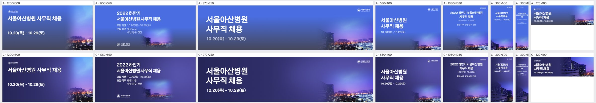
| 규격 | 점수 | 비중 | 크롭 | 배경 | 글자 | 메모 | AI 상자 | 그림 면적·주인공·채움·겹침 |
|---|---|---|---|---|---|---|---|---|
| 1200×600 | 3 | too_small | awkward | flat | ok | 오른쪽 아래 구석에 아파트와 불빛 조각만 남아 있다. 사진을 오른쪽 40% 폭까지 키우고 왼쪽 병원 건물이 보이게 크롭을 왼쪽으로 옮겨, 왼쪽 단색 남색 면적을 줄인다. | rule | 15% · 31% · 45% · 0% |
| 1250×560 | 3 | too_small | ok | flat | ok | 병원 건물이 화면 중앙 아래에 작고 흐리게 묻힌다. 사진을 오른쪽 절반 높이 전체로 키우고 상단 페이드를 약하게 줄여 야경이 살아나게 한다. | rule | 9% · 18% · 29% · 0% |
| 970×250 | 4 | ok | ok | ok | ok | 건물과 야경이 오른쪽에 잘 들어왔다. 왼쪽 단색 면에 하늘 보라 톤을 아주 약하게 그라데이션으로 이어 주면 연결이 더 자연스럽다. | rule | 5% · 26% · 40% · 0% |
| 580×400 | 3 | too_small | ok | flat | ok | 사진이 오른쪽 아래 1/4에 갇혀 있다. 하단 전체 폭으로 사진을 깔고 높이를 40%까지 올려 건물이 또렷하게 보이게 한다. | rule | 4% · 21% · 36% · 0% |
| 1080×1080 | 3 | too_small | ok | flat | ok | 정사각 지면의 대부분이 단색 남색이라 비어 보인다. 사진을 하단 50%까지 키우고 건물을 왼쪽 아래에 앵커하며, 본문 글자 크기를 1.3배 이상 키운다. | rule | 7% · 32% · 49% · 0% |
| 300×600 | 4 | ok | ok | ok | ok | 하단에 건물이 잘 보인다. 일정 텍스트가 작으니 날짜를 한 단계 키운다. | shrink | 51% · 50% · 63% · 0% |
| 300×1050 | 3 | ok | ok | flat | ok | 글자가 지나치게 작아 판독이 어렵고 중단부가 비어 있다. 제목과 날짜를 2배 가까이 키워 상단 1/3을 채우고, 사진을 위로 더 올린다. | ok | 38% · 38% · 52% · 0% |
| 320×100 | 4 | ok | ok | ok | ok | 건물이 오른쪽에 잘 들어왔다. 날짜 글자가 작으니 한 단계 키우고 제목과의 줄간격을 줄인다. | shrink | 57% · 46% · 65% · 0% |
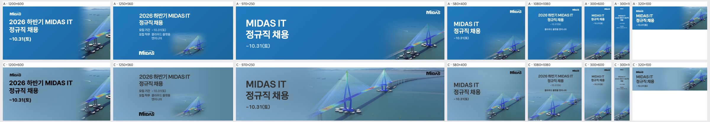
| 규격 | 점수 | 비중 | 크롭 | 배경 | 글자 | 메모 | AI 상자 | 그림 면적·주인공·채움·겹침 |
|---|---|---|---|---|---|---|---|---|
| 1200×600 | 3 | too_small | awkward | ok | ok | 오른쪽 끝에 주탑 하나의 일부와 교각만 걸려 어색합니다. 키비주얼을 30% 정도 키우고 왼쪽으로 당겨 주탑 2개와 응력 컬러 케이블이 온전히 보이게 하세요. | rule | 16% · 29% · 40% · 0% |
| 1250×560 | 2 | too_small | subject_cut | flat | low_contrast | 다리가 오른쪽 아래 구석에 작게 잘려 있고 나머지 2/3는 단색 회청색이라 비어 보입니다. 키비주얼을 지면 높이만큼 키워 오른쪽 절반에 배치하고, 본문 회색 텍스트는 진한 네이비(#1E2A3A 수준)로 바꾸세요. | rule | 9% · 15% · 26% · 0% |
| 970×250 | 4 | ok | ok | ok | ok | 주탑 2개와 바다가 자연스럽게 이어져 가장 좋습니다. 다만 '~10.31(토)'의 회색이 바다 톤에 묻히니 한 단계 진하게 하고, 로고 아래 하늘 경계가 살짝 보이는 부분만 그라데이션으로 다듬으세요. | shrink | 69% · 50% · 61% · 0% |
| 580×400 | 3 | too_small | subject_cut | ok | ok | 주탑 상단과 다리 왼쪽이 잘린 채 구석에 몰려 있습니다. 키비주얼을 키우고 위로 올려 주탑 꼭대기가 보이게 하고, 날짜 텍스트 대비를 높이세요. | shrink | 33% · 21% · 33% · 1.7% |
| 1080×1080 | 2 | too_small | awkward | flat | low_contrast | 다리가 하단 띠처럼만 보이고 위쪽 절반이 단색이라 비어 보입니다. 키비주얼을 지면 하단 55~60%까지 키워 주탑이 텍스트 블록 아래까지 올라오게 하고, 작은 직무·기간 텍스트는 키우면서 진한 색으로 바꾸세요. | shrink | 62% · 49% · 63% · 0% |
| 300×600 | 2 | too_small | subject_cut | flat | low_contrast | 주탑 일부만 하단에 작게 걸려 있고 텍스트도 작고 흐립니다. 주탑 하나를 세로로 크게 크롭해 하단 절반을 채우고, 헤드라인은 최소 2배로 키워 진한 색으로 바꾸세요. | rule | 21% · 35% · 45% · 0% |
| 300×1050 | 1 | too_small | subject_cut | flat | low_contrast | 텍스트가 판독 불가 수준으로 작고, 다리 조각도 하단 구석에만 있습니다. 헤드라인을 폭의 80%까지 키우고, 주탑 하나를 세로로 크롭해 하단 40%를 채우는 레이아웃으로 다시 짜세요. | rule | 17% · 31% · 43% · 0% |
| 320×100 | 3 | ok | awkward | ok | low_contrast | 작은 지면인데 회색 텍스트가 회청색 배경에 묻힙니다. 헤드라인을 진한 네이비나 흰색으로 바꾸고, 다리는 주탑 하나와 컬러 케이블이 또렷이 보이도록 확대 크롭하세요. | rule | 20% · 36% · 51% · 0% |
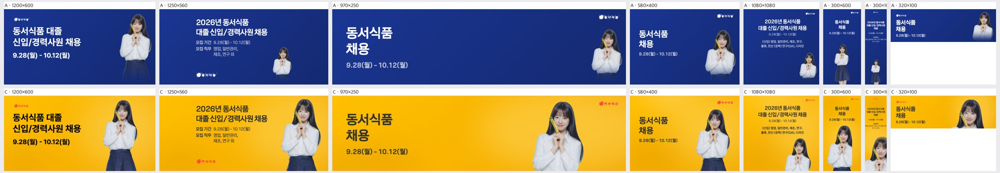
| 규격 | 점수 | 비중 | 크롭 | 배경 | 글자 | 메모 | AI 상자 | 그림 면적·주인공·채움·겹침 |
|---|---|---|---|---|---|---|---|---|
| 1200×600 | 4 | ok | ok | ok | ok | 인물이 가운데 쪽으로 붙어 오른쪽 여백이 남으니 인물을 오른쪽으로 약 60px 옮기고 높이를 5% 키우면 균형이 맞습니다. 좌상단 로고도 1.3배로 키워 주세요. | ok | 27% · 11% · 24% · 0% |
| 1250×560 | 4 | ok | ok | ok | ok | 텍스트 블록과 인물 사이 중앙이 비어 보이니 인물을 10% 키워 왼쪽으로 당기세요. 좌하단에 따로 떨어진 로고는 타이틀 위로 올려 정렬을 맞춰 주세요. | free | 31% · 13% · 31% · 0% |
| 970×250 | 4 | ok | ok | ok | ok | 인물을 가슴선에서 자른 것은 적절합니다. 다만 타이틀과 인물 사이 중앙 공백이 크니 인물을 왼쪽으로 약 80px 당기거나 타이틀 크기를 10% 키우세요. | shrink | 27% · 11% · 20% · 0% |
| 580×400 | 4 | ok | ok | ok | ok | 구성은 안정적입니다. 우상단 로고가 너무 작아 브랜드가 약하니 1.5배로 키우고 타이틀 상단선에 맞춰 정렬하세요. | free | 40% · 17% · 26% · 0% |
| 1080×1080 | 3 | too_small | ok | flat | ok | 인물이 하단 1/3에 작게 깔려 노란 면이 비어 보입니다. 인물을 1.4배 키워 하단 절반 이상을 채우고, 직무 안내 문구는 2pt 이상 키워 가독성을 확보하세요. | shrink | 25% · 13% · 37% · 0% |
| 300×600 | 4 | ok | ok | ok | ok | 날짜 바로 아래에 머리가 붙어 답답하니 인물을 20px 내려 간격을 확보하세요. 로고는 키워 중앙 정렬로 바꾸세요. | shrink | 51% · 43% · 51% · 0% |
| 300×1050 | 3 | ok | ok | ok | low_contrast | 폭이 좁은 지면에 직무 안내 본문까지 넣어 글자가 너무 작아 읽히지 않습니다. 본문을 빼고 타이틀과 날짜만 1.5배로 키우세요. 인물 머리와 텍스트 사이에도 여백을 더 두세요. | shrink | 50% · 36% · 53% · 0% |
| 320×100 | 4 | ok | ok | ok | ok | 정수리가 상단 끝에 거의 닿으니 인물을 5px 내리거나 3% 줄여 머리 위에 숨 쉴 공간을 주세요. | free | 58% · 16% · 29% · 0% |
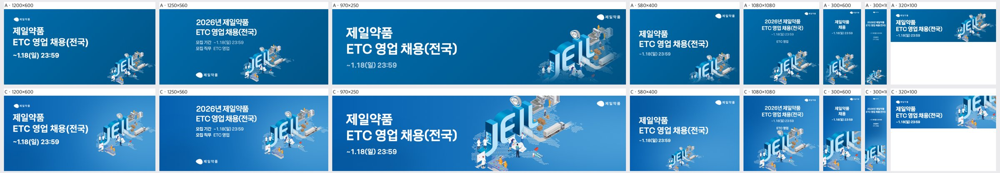
| 규격 | 점수 | 비중 | 크롭 | 배경 | 글자 | 메모 | AI 상자 | 그림 면적·주인공·채움·겹침 |
|---|---|---|---|---|---|---|---|---|
| 1200×600 | 4 | ok | ok | ok | ok | 키비주얼 크기와 위치가 적절합니다. 오른쪽 트럭 끝이 가장자리에 붙어 있으니 키비주얼을 3~5% 왼쪽으로 옮겨 여백을 확보하세요. | shrink | 38% · 24% · 39% · 1.7% |
| 1250×560 | 4 | ok | ok | ok | ok | 상단 JEIL 배지가 위 가장자리에 거의 닿아 있습니다. 키비주얼을 조금 내리거나 5% 축소해 상하 여백을 맞추세요. | shrink | 38% · 26% · 40% · 2% |
| 970×250 | 3 | too_big | subject_cut | ok | ok | 높이에 비해 키비주얼을 키워서 위 JEIL 배지와 공장, 아래 실험실 인물이 잘립니다. 높이 기준 90% 안으로 축소해 전체가 들어오게 하세요. | grow | 67% · 38% · 53% · 0% |
| 580×400 | 3 | too_small | subject_cut | flat | ok | 키비주얼이 오른쪽 아래 구석에 작게 박혀 있고 아래 끝이 잘립니다. 오른쪽 하단 빈 영역을 채우도록 약 1.5배 키우고 바닥에서 띄우세요. | free | 34% · 10% · 26% · 0% |
| 1080×1080 | 3 | ok | subject_cut | ok | ok | 키비주얼 아래 실험실 부분이 바닥에서 잘리고 'ETC 영업' 문구가 배지에 바짝 붙어 있습니다. 키비주얼을 약간 축소해 하단 여백을 두고 텍스트와 간격을 벌리세요. | shrink | 50% · 45% · 58% · 0% |
| 300×600 | 3 | too_big | subject_cut | ok | ok | 키비주얼이 폭을 넘어 오른쪽 공장과 트럭, 하단이 잘립니다. 폭 기준으로 맞춰 축소하고 JEIL 글자를 가운데 두세요. | ok | 55% · 34% · 42% · 0% |
| 300×1050 | 2 | too_small | awkward | flat | ok | 하단에 'JE' 조각만 남고 중간 지면이 비어 보입니다. 키비주얼 전체가 폭 안에 들어오게 축소해 중하단 중앙에 배치하고 텍스트 크기를 키우세요. | shrink | 34% · 22% · 33% · 0% |
| 320×100 | 3 | ok | subject_cut | ok | ok | JEIL 글자 윗부분과 오른쪽이 잘립니다. 높이에 맞춰 키비주얼을 축소해 글자 전체가 보이게 하세요. | grow | 38% · 30% · 50% · 0% |
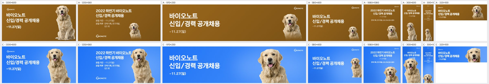
| 규격 | 점수 | 비중 | 크롭 | 배경 | 글자 | 메모 | AI 상자 | 그림 면적·주인공·채움·겹침 |
|---|---|---|---|---|---|---|---|---|
| 1200×600 | 4 | ok | ok | ok | ok | 개가 하단에서 앞발 일부가 잘리니 스케일을 5% 정도 줄이거나 위로 올려 앞발 끝까지 보이게 정리할 것. | ok | 35% · 11% · 26% · 0% |
| 1250×560 | 3 | too_big | ok | ok | overlap | 헤드라인 '바이오노트' 끝이 개 귀에 닿으니 개를 오른쪽으로 40~60px 밀고 정수리 위 여백을 확보할 것. | shrink | 35% · 11% · 28% · 0% |
| 970×250 | 4 | ok | ok | ok | ok | 정수리가 상단에 거의 붙어 있으니 상단에 10px 이상 여백을 두도록 개를 살짝 내리거나 축소할 것. | shrink | 29% · 13% · 28% · 0% |
| 580×400 | 3 | too_small | subject_cut | flat | ok | 개가 우측 끝에 작게 붙어 몸이 잘리니 1.3배 키워 우하단에 앉히고 몸 전체가 보이게 배치할 것. | shrink | 19% · 7% · 22% · 0% |
| 1080×1080 | 4 | ok | ok | ok | ok | 본문 서브카피가 작아 모바일 가독성이 떨어지니 모집 직무 줄을 1.3배 키울 것. | shrink | 23% · 18% · 41% · 0% |
| 300×600 | 3 | ok | ok | ok | overlap | 마감일 '~11.27(일)'이 개 정수리와 맞닿으니 개를 20px 내리거나 텍스트 블록을 위로 올려 간격을 띄울 것. | grow | 68% · 49% · 61% · 0% |
| 300×1050 | 2 | too_small | ok | flat | low_contrast | 개가 바닥에 작게 놓이고 중간이 텅 비었으니 개를 폭 가득 2배 키워 하단 40%를 채우고 텍스트도 키울 것. | shrink | 26% · 12% · 29% · 0% |
| 320×100 | 4 | ok | ok | ok | ok | 개 얼굴이 우측 상단에 바짝 붙으니 살짝 축소해 상하 여백을 균등하게 맞출 것. | free | 43% · 23% · 43% · 0% |
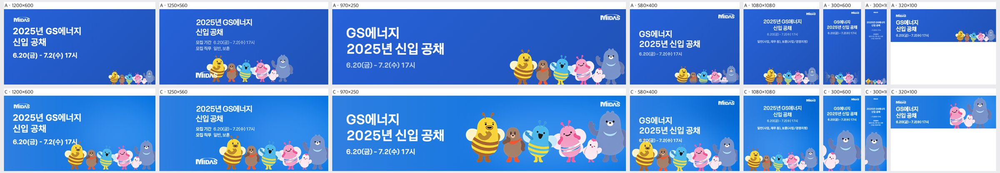
| 규격 | 점수 | 비중 | 크롭 | 배경 | 글자 | 메모 | AI 상자 | 그림 면적·주인공·채움·겹침 |
|---|---|---|---|---|---|---|---|---|
| 1200×600 | 3 | ok | ok | ok | overlap | 맨 왼쪽 노란 벌 더듬이가 날짜 '17시'에 닿습니다. 캐릭터 떼를 오른쪽 아래로 40px쯤 내리거나 90% 크기로 줄여 날짜 아래에 여백을 확보하세요. | shrink | 25% · 24% · 39% · 0% |
| 1250×560 | 3 | ok | ok | ok | overlap | 노란 벌 머리와 더듬이가 '모집 직무 일반, 보훈' 줄 바로 아래에 붙어 답답합니다. 캐릭터 떼를 오른쪽으로 옮기고 살짝 줄여 텍스트 블록과 20px 이상 띄우세요. 하단 MIDAS 로고와 벌 사이 간격도 함께 넓히세요. | grow | 37% · 30% · 41% · 0% |
| 970×250 | 4 | ok | ok | ok | ok | 비중과 배치는 좋습니다. 캐릭터 발끝이 하단에서 잘리므로 5~8% 축소해 발까지 보이게 하거나, 의도된 하단 블리드라면 모두 같은 높이로 잘리게 맞추세요. | free | 55% · 36% · 51% · 0% |
| 580×400 | 2 | too_big | subject_cut | ok | overlap | 노란 벌 더듬이가 날짜 '6.20(금)'을 가리고, 오른쪽 파란 곰은 우측 끝에서 잘립니다. 캐릭터 떼를 80% 정도로 줄여 날짜 아래 영역에 넣고 곰 전체가 보이게 좌우를 재배치하세요. | grow | 49% · 18% · 34% · 0% |
| 1080×1080 | 3 | too_small | ok | flat | ok | 캐릭터가 하단에 작게 깔려 있어 화면 중앙이 비어 보입니다. 캐릭터 떼를 1.5배 이상 키워 하단 1/2를 채우고, 텍스트 블록과 시각적 균형을 맞추세요. | shrink | 33% · 12% · 32% · 0% |
| 300×600 | 2 | ok | awkward | ok | ok | 파란 곰과 병아리 위주의 조각만 보여 캐릭터 '떼'라는 정체성이 사라졌습니다. 떼를 2단으로 재배치하거나 대표 캐릭터 2~3마리(노란 벌·핑크 벌·곰)를 의도적으로 골라 온전한 모습으로 넣으세요. | grow | 58% · 36% · 50% · 0% |
| 300×1050 | 2 | ok | awkward | flat | low_contrast | 하단에 곰과 병아리 조각만 있고 상단 텍스트는 너무 작아 읽히지 않습니다. 헤드라인을 2배 이상 키우고, 캐릭터를 세로로 쌓아 중하단 전체를 채우세요. | grow | 55% · 53% · 68% · 0% |
| 320×100 | 3 | ok | subject_cut | ok | ok | 핑크 벌·병아리·곰만 보이고 노란 벌 등 나머지는 잘렸습니다. 다섯 마리가 모두 보이게 축소해 우측에 일렬로 넣거나, 대표 캐릭터 3마리를 온전하게 골라 배치하세요. | free | 53% · 16% · 33% · 0% |
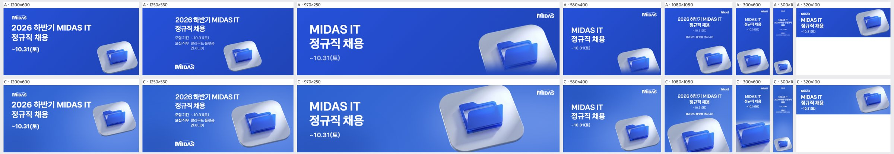
| 규격 | 점수 | 비중 | 크롭 | 배경 | 글자 | 메모 | AI 상자 | 그림 면적·주인공·채움·겹침 |
|---|---|---|---|---|---|---|---|---|
| 1200×600 | 4 | ok | ok | ok | ok | 아이콘이 우측 가장자리에 붙어 있으니 오른쪽 여백을 40px 정도 확보하고, 크기를 10% 키워 카피와 무게를 맞출 것. | shrink | 30% · 16% · 28% · 0% |
| 1250×560 | 4 | ok | ok | ok | ok | 타일 오른쪽 모서리가 프레임에 거의 닿으니 좌측으로 30px 옮겨 여백을 확보하고, 하단 로고와 본문 사이 빈 공간을 줄일 것. | shrink | 36% · 29% · 41% · 0% |
| 970×250 | 4 | ok | ok | ok | ok | 타일 위아래가 잘리는 것은 허용 범위이나 폴더 상단이 프레임에 바짝 붙어 있으니 아이콘을 5~10% 줄이고 세로 중앙에 맞출 것. | grow | 55% · 33% · 45% · 0% |
| 580×400 | 3 | ok | awkward | ok | ok | 타일이 우하단 모서리에서 잘려 조각처럼 보이니 아이콘을 프레임 안으로 끌어올려 타일 전체가 보이게 배치할 것. | shrink | 38% · 6% · 17% · 0% |
| 1080×1080 | 2 | ok | subject_cut | flat | ok | 폴더 하단이 프레임 밖으로 잘리고 카피와 아이콘 사이 중앙이 비어 있으니 아이콘을 카피 아래 중앙에 전체가 보이도록 올리고 정사각 지면의 40% 크기로 키울 것. | free | 51% · 16% · 31% · 0% |
| 300×600 | 2 | ok | subject_cut | flat | ok | 폴더가 하단·우측에서 잘리니 아이콘을 폭의 75% 크기로 가로 중앙에 두고 하단 여백 안에 전체가 들어오게 배치할 것(A처럼). | ok | 50% · 40% · 49% · 0% |
| 300×1050 | 1 | too_small | ok | flat | low_contrast | 카피가 너무 작아 읽히지 않고 중간이 텅 비어 있으니 헤드라인을 폭에 맞춰 2~3배 키우고 아이콘을 폭의 80% 크기로 세로 중앙부에 배치할 것. | rule | 24% · 22% · 34% · 0% |
| 320×100 | 4 | ok | ok | ok | ok | 날짜 글자가 모바일에서 작으니 한 단계 키우고, 아이콘 우측 여백을 조금 더 줄 것. | rule | 40% · 32% · 47% · 0% |
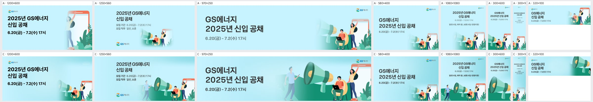
| 규격 | 점수 | 비중 | 크롭 | 배경 | 글자 | 메모 | AI 상자 | 그림 면적·주인공·채움·겹침 |
|---|---|---|---|---|---|---|---|---|
| 1200×600 | 3 | too_small | ok | flat | ok | 우하단 일러스트를 약 1.3배 키우고 오른쪽 끝에 붙여 우상단의 빈 하늘을 줄이세요. 폰 화면까지 보이도록 위로 올리면 오른쪽 절반이 채워집니다. | shrink | 38% · 18% · 35% · 0% |
| 1250×560 | 4 | ok | ok | ok | ok | 반투명하게 흐려진 걷는 남자를 불투명하게 살리거나 아예 빼서 유령처럼 보이지 않게 하세요. 일러스트 전체를 약간 키워 하단 빈 곳을 채우세요. | shrink | 55% · 28% · 40% · 1.8% |
| 970×250 | 4 | ok | ok | ok | ok | 우상단 로고가 폰 프레임 위에 얹혀 있으니 로고를 좌상단으로 옮기거나 폰과 간격을 두세요. 걷는 남자와 '17시' 사이 여백도 조금 더 확보하세요. | shrink | 53% · 47% · 62% · 0% |
| 580×400 | 3 | too_small | ok | seam | ok | 오른쪽 진한 그라데이션 띠가 경계처럼 보이니 바탕색과 맞춰 없애세요. 인물 그룹을 1.3배 키워 하단 우측을 채우세요. | rule | 6% · 19% · 34% · 0% |
| 1080×1080 | 4 | ok | ok | ok | ok | 상단 텍스트 블록이 지면 대비 작으니 제목을 1.3배 키우세요. 일러스트를 조금 위로 올려 중간 빈 하늘을 줄이세요. | shrink | 56% · 38% · 58% · 0% |
| 300×600 | 3 | ok | subject_cut | ok | ok | 메가폰만 크게 남고 인물들이 오른쪽에서 잘립니다. 크롭 기준을 앉은 남자와 여자로 옮겨 인물이 화면 안에 들어오게 하세요. | free | 63% · 54% · 67% · 0% |
| 300×1050 | 2 | too_small | awkward | flat | low_contrast | 상단 텍스트가 너무 작아 읽히지 않으니 제목을 2배 이상 키우세요. 하단에 메가폰 조각만 남지 않도록 인물 그룹을 세로 중앙 하단에 크게 배치해 빈 중간을 채우세요. | rule | 17% · 31% · 46% · 0% |
| 320×100 | 3 | ok | awkward | ok | ok | 오른쪽에 잘린 메가폰만 보입니다. 메가폰과 앉은 남자가 함께 보이도록 크롭을 왼쪽으로 옮기거나 일러스트를 축소하세요. | grow | 36% · 26% · 42% · 0% |
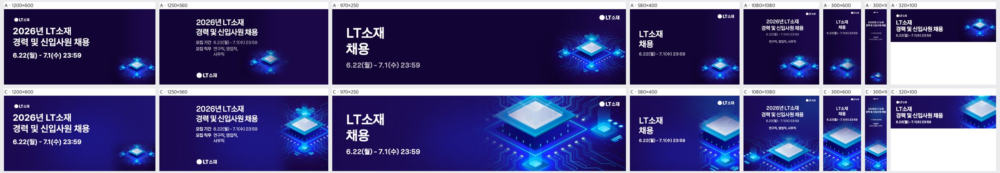
| 규격 | 점수 | 비중 | 크롭 | 배경 | 글자 | 메모 | AI 상자 | 그림 면적·주인공·채움·겹침 |
|---|---|---|---|---|---|---|---|---|
| 1200×600 | 3 | too_small | ok | flat | ok | 우하단 칩이 A와 같은 크기로 작아 오른쪽 절반이 비어 보이므로, 칩을 지면 높이의 80% 정도로 키워 오른쪽 40% 영역에 배치하세요. | rule | 7% · 8% · 29% · 0% |
| 1250×560 | 4 | ok | ok | ok | ok | 칩 오른쪽 끝이 지면 가장자리에 살짝 잘리니, 칩을 왼쪽으로 30~40px 당겨 칩 윤곽이 온전히 들어오게 하세요. | shrink | 32% · 16% · 34% · 0% |
| 970×250 | 4 | ok | ok | ok | ok | 우상단 로고가 밝은 회로선 위에 얹혀 존재감이 약하니, 로고 뒤를 어둡게 눌러 주거나 칩을 아래로 조금 내려 로고 주변을 비워 주세요. | shrink | 53% · 40% · 48% · 0% |
| 580×400 | 3 | ok | subject_cut | ok | ok | 칩이 오른쪽 가장자리에 반쯤 잘려 조각만 보이므로, 칩을 축소하고 왼쪽으로 옮겨 칩 전체가 오른쪽 하단에 들어오게 하세요. | free | 33% · 16% · 25% · 0% |
| 1080×1080 | 4 | ok | subject_cut | ok | ok | 칩 하단이 지면 밖으로 잘리니, 칩을 10% 정도 축소하거나 위로 올려 아래 꼭짓점까지 보이게 하세요. | shrink | 53% · 14% · 30% · 0% |
| 300×600 | 4 | ok | ok | ok | ok | 칩 좌우가 잘려 꽉 차 보이니, 칩을 살짝 줄여 양옆에 여백을 주고 텍스트 블록과의 간격을 확보하세요. | grow | 70% · 35% · 43% · 0% |
| 300×1050 | 3 | ok | subject_cut | flat | ok | 상단 텍스트가 너무 작고 중간이 비어 보이며 칩 좌우가 잘리니, 텍스트를 1.5배 키우고 칩은 폭에 맞게 축소해 중하단에 배치하세요. | shrink | 45% · 21% · 34% · 0% |
| 320×100 | 4 | ok | ok | ok | ok | 칩이 오른쪽 끝에 일부 잘리니, 칩을 약간 축소해 우측 여백 안에 완전히 넣으세요. | free | 37% · 30% · 51% · 0% |
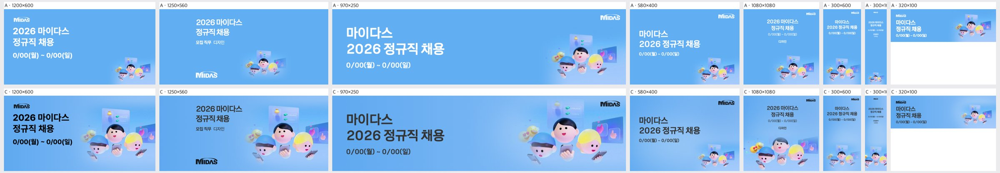
| 규격 | 점수 | 비중 | 크롭 | 배경 | 글자 | 메모 | AI 상자 | 그림 면적·주인공·채움·겹침 |
|---|---|---|---|---|---|---|---|---|
| 1200×600 | 4 | ok | ok | ok | ok | 상단 머니 카드 윗부분이 경계에 바짝 붙어 있으니 KV를 5% 정도 줄이고 아래로 내려 위쪽 여백을 확보할 것. | shrink | 53% · 21% · 36% · 0% |
| 1250×560 | 4 | ok | subject_cut | ok | ok | 하단 캐릭터의 폰 든 손이 프레임에 잘리므로 KV를 위로 30px 정도 올려 손까지 다 보이게 할 것. | ok | 53% · 22% · 31% · 0% |
| 970×250 | 3 | too_big | subject_cut | ok | ok | 높이를 꽉 채워 위 카드와 아래 폰·손이 잘리므로, KV를 높이의 85% 수준으로 줄여 머리부터 폰까지 다 보이게 하고 카드 일부만 살릴 것. | shrink | 39% · 19% · 33% · 0% |
| 580×400 | 3 | too_small | ok | flat | ok | KV가 우하단에 작게 박혀 오른쪽 중앙이 비어 보이므로, 텍스트 블록 오른쪽 영역 높이의 70%까지 KV를 키워 우측에 배치할 것. | rule | 10% · 8% · 22% · 0% |
| 1080×1080 | 3 | too_small | subject_cut | flat | ok | 상단 텍스트와 하단 KV 사이 중앙이 비고 캐릭터 손이 하단에서 잘리므로, KV를 폭 80%로 키워 중앙 하단에 두고 텍스트를 한 단계 키울 것. | free | 51% · 32% · 42% · 0% |
| 300×600 | 3 | too_small | subject_cut | flat | low_contrast | 텍스트가 너무 작아 읽기 어렵고 KV는 하단에서 잘리므로, 제목을 1.5배 키우고 KV를 폭 전체로 키워 하단 여백 안쪽에 올릴 것. | rule | 0% · 19% · 31% · 0% |
| 300×1050 | 2 | too_small | ok | flat | low_contrast | 글자와 KV가 모두 극소형이라 세로 중앙 600px이 비어 있으므로, 제목을 폭 기준으로 크게 키우고 KV를 폭 100%로 키워 중앙~하단에 배치할 것. | ok | 38% · 7% · 15% · 0% |
| 320×100 | 4 | ok | ok | ok | ok | KV가 우측에 적정하나 위쪽 카드가 조금 잘리므로, 캐릭터 3명 위주로 크롭해 얼굴을 조금 더 키울 것. | rule | 17% · 13% · 29% · 0% |
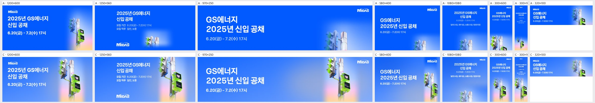
| 규격 | 점수 | 비중 | 크롭 | 배경 | 글자 | 메모 | AI 상자 | 그림 면적·주인공·채움·겹침 |
|---|---|---|---|---|---|---|---|---|
| 1200×600 | 4 | ok | ok | ok | ok | 신호등 상단이 지면 위 끝에 붙어 답답하니 키비주얼을 5~8% 내려 위쪽 여백을 확보하고, 오른쪽 아래 핑크·피치 그라데이션이 파란 지면과 이어지는 경계를 조금 더 부드럽게 풀 것. | shrink | 34% · 26% · 43% · 0% |
| 1250×560 | 3 | ok | subject_cut | ok | ok | 보행 신호기 박스가 오른쪽 끝에서 잘리니 키비주얼을 왼쪽으로 약 80px 옮기거나 10% 줄여 하트 신호기 전체가 들어오게 할 것. | shrink | 33% · 25% · 37% · 0% |
| 970×250 | 4 | ok | ok | ok | ok | 아래쪽 신호기 박스가 하단에서 일부 잘리니 키비주얼을 약간 줄여 하트 박스까지 온전히 보이게 하고, MIDAS 로고와 기둥 사이 간격을 20px 이상 띄울 것. | shrink | 24% · 15% · 30% · 0% |
| 580×400 | 3 | ok | subject_cut | ok | ok | 기둥과 신호기가 오른쪽 끝에 띠처럼 몰려 반쯤 잘리니 키비주얼을 왼쪽으로 당겨 신호기 박스 전체가 보이게 하고, 타이틀과의 간격을 유지할 것. | shrink | 25% · 17% · 32% · 0% |
| 1080×1080 | 2 | too_small | awkward | flat | ok | 하단에 신호등 머리만 조금 보이고 위쪽 파란 면이 비어 보이니 키비주얼을 1.5배 이상 키워 신호등과 하트 신호기가 하단 절반을 채우도록 다시 배치할 것. | rule | 8% · 23% · 43% · 0% |
| 300×600 | 4 | ok | ok | ok | ok | 하단 신호기 박스가 아래 끝에 붙어 있으니 키비주얼을 조금 올려 하트 박스 아래에 숨 쉴 여백을 줄 것. | ok | 54% · 33% · 46% · 0% |
| 300×1050 | 3 | ok | ok | flat | low_contrast | 타이틀·기간 글자가 너무 작아 읽히지 않으니 타이틀을 최소 22px 이상으로 키우고, 중간의 빈 파란 면을 줄이도록 키비주얼을 위로 확대 배치할 것. | grow | 66% · 52% · 67% · 0% |
| 320×100 | 4 | ok | ok | ok | ok | 신호등이 작아 형태만 보이니 보행 신호기 박스 쪽으로 크롭해 하트가 식별되게 확대할 것. | rule | 18% · 38% · 54% · 0% |
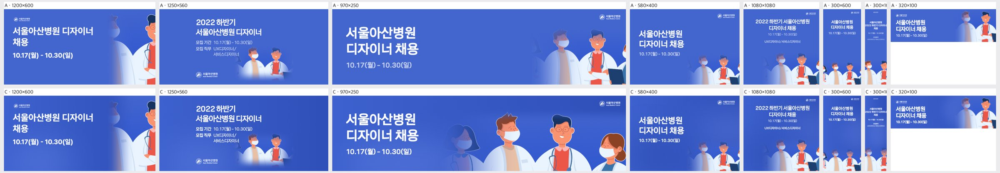
| 규격 | 점수 | 비중 | 크롭 | 배경 | 글자 | 메모 | AI 상자 | 그림 면적·주인공·채움·겹침 |
|---|---|---|---|---|---|---|---|---|
| 1200×600 | 2 | too_small | face_cut | flat | ok | 오른쪽 끝에 안경 쓴 의사의 반쪽 얼굴만 걸려 있다. 키비주얼을 1.5배쯤 키우고 왼쪽으로 당겨 오른쪽 40% 영역에 2~3명이 온전히 들어오게 배치할 것. | rule | 14% · 30% · 44% · 0% |
| 1250×560 | 2 | too_small | subject_cut | seam | ok | 인물 두 명이 하단 중앙에 작게 페이드돼 떠 있어 경계가 뿌옇게 보인다. 그룹 전체를 오른쪽 절반에 하단 정렬로 크게 넣고 텍스트는 왼쪽 컬럼으로 분리할 것. | rule | 9% · 16% · 27% · 0% |
| 970×250 | 4 | ok | ok | ok | ok | 4인 구성이 잘 살아 있다. 다만 맨 왼쪽 여성이 반투명하게 흐려져 어색하니 페이드를 줄이거나 빼고, 오른쪽 끝 여성의 잘림을 피하도록 그룹을 5%쯤 왼쪽으로 옮길 것. | free | 53% · 48% · 63% · 0% |
| 580×400 | 2 | too_small | ok | flat | ok | 우하단 인물이 아이콘 크기라 지면 절반이 빈 파랑이다. 인물 그룹을 2배쯤 키워 하단 전폭으로 깔고 텍스트는 상단 좌측에 유지할 것. | rule | 6% · 20% · 35% · 0% |
| 1080×1080 | 3 | too_small | ok | flat | ok | 인물이 하단 1/3에만 작게 있고 텍스트 블록도 작아 중간이 비어 보인다. 인물을 키워 하단 45%까지 올리고 헤드라인 크기를 1.5배로 키울 것. | rule | 10% · 33% · 50% · 0% |
| 300×600 | 2 | too_small | ok | flat | ok | 인물 4명이 바닥에 깨알처럼 붙어 있다. 1~2명만 크게 크롭해 하단 절반을 채우고 헤드라인을 키울 것. | rule | 16% · 31% · 45% · 0% |
| 300×1050 | 2 | too_small | ok | flat | low_contrast | 글자가 너무 작아 읽히지 않고 인물도 바닥에 작게 붙어 있다. 헤드라인을 최소 28px 이상으로 키우고 인물 1~2명을 세로로 크게 크롭해 하단 40%를 채울 것. | rule | 17% · 33% · 47% · 0% |
| 320×100 | 3 | ok | face_cut | ok | ok | 오른쪽 인물들이 가장자리와 상단에서 얼굴이 잘린다. 안경 쓴 의사 한 명의 얼굴이 온전히 보이도록 크롭 중심을 맞추고 조금 축소할 것. | rule | 18% · 38% · 58% · 0% |